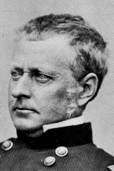

|

|

|
|
|
Union general and commander of the Union's Army of the
Potomac for a brief time, Joseph Hooker was born on November
13, 1814, in Hadley, Massachusetts. Hooker was educated at
West Point Military Academy, where he graduated 29th of 50
in the class of 1837. Shortly afterward, he received his
first army combat assignment as a staff officer during the
Mexican War. A tall, well-proportioned man, Hooker possessed
a contentious and prickly personality. After several
arguments marred his early career, he resigned from the
military and settled in California as a farmer and landowner
in the 1850s.
Hooker reentered the army after the first battle of Bull
Run. Appointed a brigadier general, Hooker commanded a
brigade of U.S. volunteers charged with the defense of
Washington D.C. He demonstrated great competence in battle,
and was rewarded for his performance during the Peninsular
and Second Bull Run Campaigns in spring and summer of 1862
with the grade of major general.
Called "Fighting Joe" by a newspaper correspondent,
Hooker led the I Corps of the Army of the Potomac in the
Antietam Campaign, again demonstrating his military
capabilities. His action in charge of a division was one of
the few bright spots during the Union loss at
Fredericksburg. As a result of the disaster there, Lincoln
turned to Hooker to command the Army of the Potomac, despite
rumors of his heavy drinking and womanizing. Lincoln knew of
Hooker's rash remark that what the country needed was a good
dictator to run the war. He wrote "I have heard, in such a
way as to believe it, of your recently saying that both the
Army and the government needed a dictator. Of course it was
not for this, but in spite of it, that I have given you the
command. Only those generals who gain success can set up
dictators. What I now ask of you is military success, and I
will risk the dictatorship."
Unfortunately, Hooker would prove as ineffective against
Lee as many of his predecessors had. Despite reinvigorating
the morale of the Army of the Potomac and planning an
excellent campaign, Hooker was outthought, outflanked, and
outfought by Lee. One reporter commented: "Not the Army of
the Potomac was beaten at Chancellorsville, but its
commander." On June 28th, 1863 Hooker resigned as commander
of the Army of the Potomac and was replaced by General
George Meade who led the army to its greatest victory at
Gettysburg.
Hooker was reassigned to command of the XI and XII Corps
of the Army of the Cumberland in September of 1863. In a
well-executed attack, Hooker and his men took the
Confederate position on Lookout Mountain in the Chattanooga
Campaign. Hooker played a part in the Atlanta Campaign, but
after being passed over for the Command of the Army of the
Tennessee, Hooker resigned and spent the rest of the war
carrying out administrative duties. He resigned from the
professional military in 1868. Joseph Hooker died on October
31, 1879 in Garden City, New York.
Source: Joan Waugh, ed., Facts on File Encyclopedia of American
History: Civil War and Reconstruction, 1856 to 1869 (New York: Facts on
File, 2003), 172-173.
|